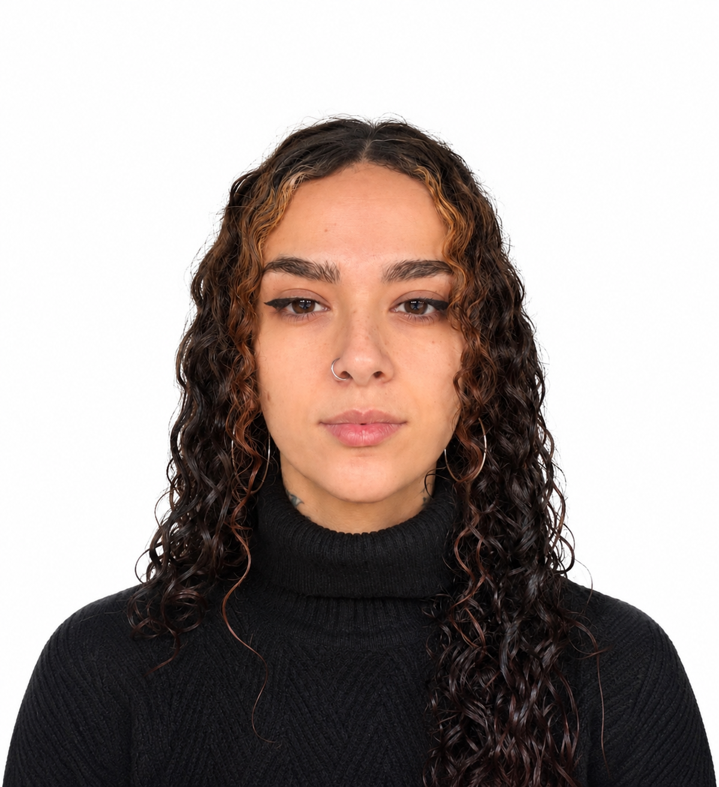

Labs built, broken, protected and documented.
And then, Cloud Security.
From caring for peopleto protecting them online.
I'm moving into cybersecurity after a background in care. My focus is the Blue Team: detection, monitoring and incident response, and in the long run, cloud security.
I learn through structured training and hands-on labs that I build, break, protect and document. Open to entry-level roles in SOC, IT support and security operations in the Basel area.

Defend systems: protect, monitor and respond.
Watch alerts and logs, and find real threats.
Protect systems and data in the cloud.
The best way to contact me is LinkedIn.